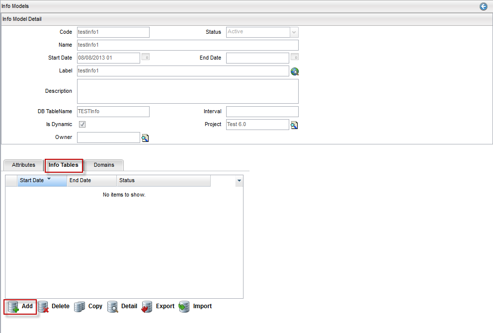
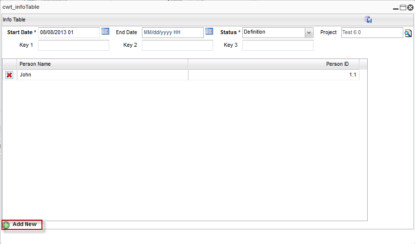

Add an Info Table
An info table can be created for a Standard Info Model that has attributes assigned. For the table to be created, both the Info Model and the Attributes must be Active (that is, the Status field must be Active).
Note: A project must be opened to create an info table.
To create an info table, complete these steps:
- From the menu bar, click Designer > Attributes, and create Active attributes of the type String or Number.
- From the menu bar, click Designer > Info Models, and create an Info Model.
- Add active attributes for the info model and change the status of the info model to Active.
- From the Info Model Detail, click the Info Tables tab and then click the Add button.

- The Info Table dialog appears, including the table column names, which corresponds to the attributes added for the info model.

- Click the Add New button. Enter required information in the coloums (for example, Person Name and Person ID), and following fields:
| Fields |
Description |
| Start Date |
The effective date of this Info Table data. Refer to version control for more details. |
| End Date |
The last date which this data is no longer effective. Refer to version control for more details. |
| Status |
A list of available Status for this Info Table (for example, Definition and Active). Default is Definition |
| Project |
Each object is assigned to a Project. This defaults to the opened project. |
Key 1,
Key 2,
Key 3 |
These key fields are used when the info table is saved, and are not used for searching. As a result, no search key is required. The fields are mapped to CWPC_INFOTABLE.
The Key 1, Key 2, and Key 3 labels denote the actual keys themselves. As an example, if you want to assign keys as Bandwidth and Price, enter Bandwidth in the Key 1 field and Price in the Key 2 field.
This feature allows the application to filter info tables using those key values. No direct logic is inside Catalog Designer that uses those fields.
|
- You can use button to delete a row before saving the info model associated with the info table.
- Click the Save button to save added data or row in info table.
Use a Versioned Info Table
A versioned info table allows you to make changes. Using a static info table does not allow for changes, as its main purpose is to use static data, such as a list of cities or provinces.
The following is an example of creating a versioned info table:
- Create a project (for example, project1).
- Open the project.
- Create an info model without a database table.
- Create info model attributes matching the info model's columns.
- Create an info table and import the data using a .csv file.
- Activate your project1 project.
- Run query on the info table.
- Create another project (for example, project2).
- Open the project.
- Open the info model that you created in step 3.
- Create a new version of info table, and then import the new .csv data into the table.
- Activate your project2 project.
- Wait for approximately five minutes for cache to update.
- Run query on the same info table to get the new version of data.
|